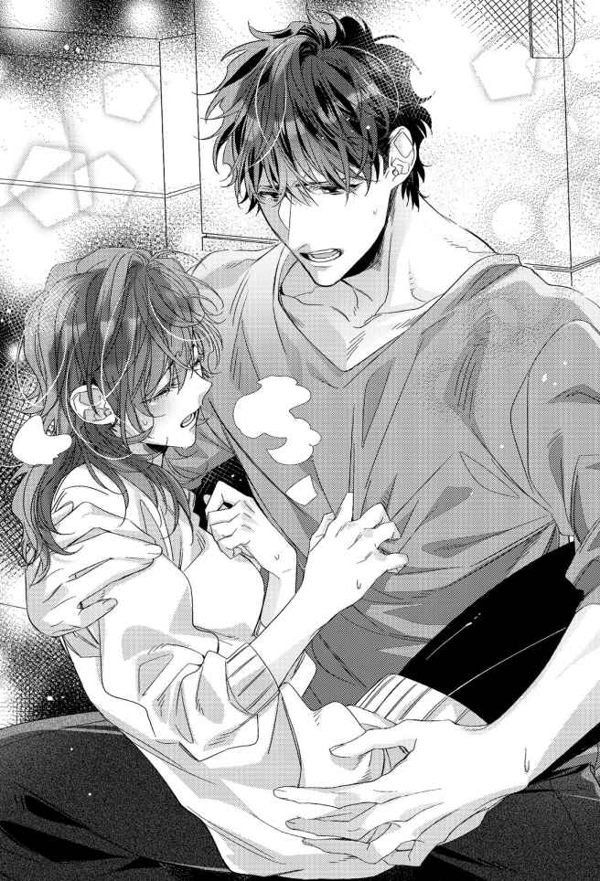

| アフターパンドラ 義兄に捧げる秘めやかな初恋【1】 (チュールキス文庫) | |
| 夜原月見 | |
| 株式会社ジュリアンパブリッシング (2019) | |

この作品はフィクションです。
実際の人物・団体・事件などに一切関係ありません。
プロローグ
私の名前は、朝子 という。
名付けは母だ。出生時刻が朝だったから、朝子。
ゆえんは、ただそれだけだったと母本人から何度か聞いている。
二階建ての持ち家で私と二人暮らしをしている兄の名前を、十夜 という。
名付けは父だ。冬の月の、十日の深夜に産まれたからなのだと私に教えたのは、やはり母だった。
十夜は、父の愛人の子である。
つまり私と兄は、父を通じて半分血が繋がっている異母兄妹ということになるのだけれど、実は一滴たりとも血縁がない事実を知ったのは、母の死後だった。
遡 ること、十年前。
私、十九歳、大学一年生。
十夜二十三歳、会社員一年目の、とある真冬の朝に母は亡くなった。
死因、くも膜下出血。
母の職場から連絡を受け、搬送先の病院へとタクシーで急いだが、死に目には間に合わなかった。
父の顔を、私は知らない。写真の中でしか知らない。それらの写真に、私の姿はない。
母が私を身ごもっている間に、余命一ヶ月を宣告される病に冒 されてしまったからだ。
その父に生前から認知していた子がいると母が知ったのは、遺産相続手続きの過程上でのことだったそうだが、母が私にそれを教えたのは、いざ十夜と暮らす直前になってからである。
「朝子。あんたにお兄ちゃんがいる。......って言ったら、ビビりまくる？」
十五年前のことだった。
リビングの隅っこに備えられた、ゴミ箱にも見える安っぽい艶を放つ超小型の仏壇を前に、母は四つ折りに畳まれた紙片を差し出した。
「ビビるも何も。チビるんだけど」
ほとんど呆れた声音でぼやきつつ、受け取った紙片を開く。
それは十夜の戸籍 謄本 だった。父の欄には、私と同じ父親の氏名が記載されていた。
「え？ 何これ、意味わかんないんだけど。私の父親って、私が産まれる前に死んだって言ってたよね？」
「うん、病気でね」
「かなり珍しい病気だったって聞いてたけど。何をどうしたら、私に兄がいたって話になっちゃうの」
腹違いの兄の存在を母が私に秘密にしていたと知って、何となくショックだった。けれどそれ以前に、父は母に内緒で十夜を認知していたそうだから、母を恨むのは筋違いな気もする。
悪いのは父だ。父とは一度も会ったことがないが、もし目の前にいたら確実に殴っているくらい腹が立つ。
「でね、本題はここからなの」
母は神妙な面持ちで私の手から戸籍謄本を抜き取ると、はあ、と溜息を吐きながら、眉間の皺 を揉みほぐす。
「すっごい嫌な予感がするんだけど」私もつられて吐息を漏らす。
母は即答した。「冴 えてるね、朝子ちゃん！」
......アホな母だった。
何が面白いのか私にはさっぱりわからなかったけれど、母は嬉々として、
「お父さんの愛人の子の名前はね、十夜くんっていうの。で、愛人だった人が死んじゃって、十夜くんは住む場所に困ってるんだって。そこで朝子ちゃんに相談なんだけど、ここに呼んじゃっていいかな～？」
と、にっこり笑いながら、両手の指で丸を作ってみせた。丸しか求めてないんだけど、というサインだ。
今思い返せば、アホすぎる母なりに悩んだりしたことだって当然あったのだろうが、まだ十三歳で中学二年生になりたてだった私の目からは、「やっぱアホだわ」としか見えない仕草だった。
「愛人って何それ、不潔すぎるんだけど。っていうか、その子どもを引き取るって正気なの？」
私の罵詈雑言に、しかし母はめげない。
にっこりしたまま言いのけた。
「モチのロンだよ～！」と。
返すがえすも心底アホな母だった。名を、真白 という。
いっそ純白でいいのでは、と思うほど、母は死ぬまで闇を抱えない人だった。
だから私が十夜と全く血縁がない事実を知った時は、心臓が凍りつくほど驚いたものだった。
母が亡くなった直後のことである。
遺品整理をしていた私は見つけてしまったのだ。戸籍上父子と明記されていたはずの十夜と私の父との間に、生物学上の血縁関係がなかった科学的根拠を示す、ＤＮＡ鑑定書を。
鑑定日は、母が十夜を引き取ろうとしていた十五年前。依頼者には、「真白」の名が刻まれていた。
何だこれ、と私は怒りながら、「そういうわけで出て行って」とＤＮＡ鑑定書を十夜に突きつけるべきだったのかもしれない。
けれど私はそうしなかった。
私は鑑定書をびりびりに引き裂いた上で、ご丁寧に二重三重にシュレッダーをし、前夜作った鍋で出たクズ野菜に紛れ込ませ、燃えるゴミに出してしまったのだ。
――証拠隠滅完了。
私はほくそ笑んでいた。
――私は誰にも言い訳をせず、十夜に恋することを許されたのだ。
まさか十夜が、
「悪ぃ。俺知ってたわ、それ」
なんて言い出そうと想像だにせず。
第一章
私の家の冷蔵庫には、パールちゃんという名前がある。
名付けは母だ。色がパールホワイトだったから、パールちゃん。ゆえんもへったくれもない、ただそれだけの理由。まるで私の名前みたいだ。
我が家の冷蔵庫をパールちゃんに買い換えた日のことを、私は昨日のことのように鮮明に覚えている。戸籍上、半分だけ血が繋がっているという十夜と暮らし始めた一日目だったから。
＊
――いきなり高三の男子と同居とか、ありえないんですけど。
実は私に腹違いの兄がいた、という衝撃発言をしてすぐ、母は十夜を迎えに行ってしまった。私は一人残されたリビングで、仏壇と呼ぶには極小サイズな観音開きの漆黒を睨 みつけるような目をして眺めていた。
うららかな春の朝のことだ。暖かな日差しが都内全域に降り注ぐ、汗ばむくらいの陽気に満たされた一日だった。
仏壇に立てられたフォトフレームの中の父は、新しい家族を手放しで歓迎するかのように、晴れやかな微笑 みを浮かべていた。
父は難病で亡くなっている。国内だけでなく世界的にも珍しい病気だったそうで、「病名が判明した時にはもう、手の施しようがなかったのよぅ」と母から聞かされていた。
残された写真や母の話から想像するに、父は小柄な男だったようだ。
省庁勤務の幹部候補だったという父の写真は、どれも揃ってキッチリ七三分け。顔つきは平坦かつぼんやりとした印象で、優男というより気弱な雰囲気が漂っている。
そんな虫も殺さないような顔をした父に隠し子がいたと知って、会ったことすらなかったけれど、手酷く裏切られた気がしていた。その反動で、仏壇ごと蹴飛ばしてやりたい腹立たしささえ覚えたほどだった。
母が十夜の存在を知ったのは、父が病死し、私を出産する間際になってからだという。
母いわく、
「そりゃ、びっくりしたわよー。びっくり仰天ってこのことかーって、太陽が眩しくて目が潰れるかと思ったくらいだったわぁ」
だそうだが、飄々 としているように見えたので、愛人の存在くらいは気付いていたのだろう。しかし問題は、その子どもを引き取ったことにある。
「お父さんが認知してた子なら私の子も同然じゃない。その子が住む場所に困ってるって言うなら、引き取るべきよ」
とんでもないゴリ押しに開いた口が塞がらない。
どうしてそんな博愛主義者みたいなことが言えるのか、不思議でならなかった。
最近亡くなったという愛人に弱みでも握られていたのだろうか。
もしくは父の遺言でもあったのだろうか。
あるいは、愛人にし損ねた復讐を、その息子に肩代わりさせようと企 んでいたのか。
正解は、どれでもない。ただ単純に母がお人よしだったというだけの話だ。そして、父亡きあとも、母は彼を心底愛していたのである。
娘の私が言うのもなんだけど、真白という人は心底アホな人だった。本当に真実、アホを貫き通した人だったのだ。
だけど人に騙されにくい人であったことが、娘としては何より幸いなことだった。
人を騙そうとする人間は、非常に疑り深い特性がある。母は善人過ぎたから、彼らの警戒心をむしろ煽 ってしまっていたのかもしれない。でなければ、父が遺 してくれた自宅はとっくに騙し取られていたはずだ。
「ただいまぁ、朝子ちゃーん」
のんびりとした春の日差しみたいに妙に間延びした母の声が玄関から響き、私は重たい足を引きずるように、のそのそとリビングを出て十夜を出迎えた。
「はい、朝子ちゃんと十夜くん兄妹の感動のごたいめーん！」
一人で感動しておけば、と冷たくあしらおうとした私は、母の後ろで俯 く男の姿を見るや、ぎょっと目を見開いた。
十夜は、左腕と右足にギプスを巻いていた。本当は無愛想なりにかなりいい男だったのだけど、その端正な顔はタコ殴りされたみたいに酷く腫 れ上がっている。
髪はしばらくカットしていないのか、毛先が肩につくまで無造作に伸びている。都内の公立高校の制服を着ていたが、よく見ると、きっちり喉元で締めたネクタイは泥と血痕でところどころ汚れていた。
「朝子ちゃん、イケメンなお兄ちゃんができて良かったねっ！」
出たよ、母のアホ病が。私は全力で首を何度も横に振りまくる。
全くもって良くない。若いヤクザかホラー映画のモンスター役みたいな外見の新しいお兄ちゃんなんて、絶対おかしい。
ドン引き状態の私の無言の意味を悟ったのか、
「......しばらくお世話になります」
ぼそ、と十夜は小さな声で零し、言葉を詰まらせたまま直立不動でいた私に向かって深く頭を下げた。
初対面の印象が最悪でどん底だと、それより下がりようがない。どんなに些細なことでも好感度は上がってしまう。
ご多分に漏れず私も、
――......挨拶はちゃんとできる人なんだ。
と、膨らみっぱなしだった頬を萎 ませつつあった。
......そんな私は十五年後の十夜いわく、
「あんた、真白さんに似てるよ」
だそうだけど――
「っていうか、その血まみれホラーな恰好、何とかならないの。ここで暮らすつもりなら着替えくらい持ってきてるんだよね？」
所在なさげに玄関の三和土 で立ち尽くす十夜から私は目を逸らした。初対面の人に対し高飛車な物言いなんてしたくなかったけれど、愛人の子といきなり同居することが決まり、反発心をきっちり押さえ込めるほど中学二年生の私は大人になれない。
「洗い替えくらいなら、少し」
十夜はぼそっと小声で返答したが、口内の切り傷に障 ったのか、わずかに顔を歪ませた。何が原因で誰にやられて見るに耐えない身なりになったのかは知らないし、できれば知りたくもなかったが、母が連れ帰ってきてしまった事後となっては仕方ない。
「――......すぐそこがリビングだから」
「え？ よく聞こえなかった」
「だからっ。そこがリビングって言ったの！ その奥が風呂場で向かいにトイレがあるから、とりあえず着替えればって言ったのっ」
「......わかった」
十夜は一度だけ頷いた。
背の高い彼と話をしていると、無機質な大木に語りかけているかのようで、まるで手応えを感じない。俯き加減の双眸 も、死んだ魚の目のように何も映していない気がして、私は何だか怖くなって再び目を逸らしてしまった。
「さて、朝子ちゃん。お母さんと一緒に買い出しに行って来ようか」
やたら挑発的な私の態度を見かねたのか、母は仕切り直すように私の手を引いた。
「十夜くん、そういうわけだから留守番よろしくねっ。アデュー！」
「ねえ。アデューってさ、使い方が違うから。おいとまします的な意味のサヨナラな挨拶だからね」
私は靴を履き、先に玄関を出てしまった母の背を追いながら、呆気 に取られる十夜を振り返る。
「しばらくうちにいるつもりなら、このノリに慣れたほうがいいと思うよ。じゃ、そういうことだから」
「いや、ちょっ......」
いきなり留守番を任せられ、困惑する十夜を残し、私は母と家を出た。
連れ帰ったばかりの十夜を自宅に一人残してきたことに、母は不安をこれっぽっちも感じていなかった。
普通であれば、まずは盗難が懸念される場面だ。正妻とその娘に対する復讐としての破壊行動があってもおかしくない。しかし、もしそうなったとしても母のことだから「盗まれる私がいけなかったのよぅ」と笑って済ませていただろうけれど。
「十夜くんなんだけどね。ホントかわいそうな子なのよ」
母は車のエンジンを掛けるなり、それまで顔に貼り付けていた笑顔を引っぺがす。
「聞くも涙、語るも涙」
「そういう前置きはどうでもいいから」
「十夜くんはね、いわゆる虐待 児なのよ」
高三男子でも、虐待「児」と呼ぶのだろうか。いまいちピンと来ない。
「あの人、児童っていう歳じゃないじゃん。虐待されてた人だって言うなら、かわいそうだなとは思うよ。でもそれって私たちには関係ない話だったんじゃないの」
「朝子ちゃんのお父さんの遺産を受け取ってるんだから、他人の振りはできないでしょ～」
母はハンドルを捌 きながら、十夜くんがどれだけかわいそうな子であるか、説明を始めた。
十夜の母、つまり父の愛人だった女は、父の遺産を受け取るなり十夜に虐待を始めたのだそうだ。男を取っ替え引っ替えする、だらしない母親と施設との間を行き来させられる生活に嫌気が差していた十夜は、高校入学と同時に家を出たという。
「――でね。愛人さんっていう人がつい最近、病気で亡くなっちゃったのよ。反社会的な人たちから借りた、かなりの額の借金を残したままね。十夜くんの怪我は、その取り立てのとばっちり」
住宅街の細い路地を抜け、国道のある大通り方向に母がハンドルを切った。
私は窓を半分まで開く。ぽかぽか陽気で車内は暑いくらいだ。
「でも、あの人に返済の義務なんてないよね」
そよそよと前髪を揺らす春風に目を細め、私は十夜を「あの人」呼ばわりして先を促す。いきなり受け入れを迫られた異分子に対し、母のように「十夜くん」と呼ぶのに強い抵抗があった。まして「お兄ちゃん」なんて無理すぎる。
「何で返済義務がない、まだ高校生のあの人に取り立てなんかあったの。あんな大怪我までさせられて。あれって、普通に傷害事件になっちゃうんじゃないの？」
矢継ぎ早の質問に、母はしたり顔で「ふふ」と笑った。
「十夜くんったらね、これ以上の警察沙汰 は困るって言うのよ」
「は？ 何で」
「二十二時以降もバイトしてるからだって」
「ホストとか？」
「ホストやったら稼げそうよね～」
あはは、と母が笑う。第一印象の十夜は、無愛想そのものだった。きちんと挨拶ができたところでホストが勤まるとは思えない。
水商売以外の二十二時以降のバイト。警備関係だろうか。しかし年齢確認が厳しそうな職種だ。
「じゃあ、土木関係？」
思いつきで言ってみた。
「わお、当たり～」
言葉こそ楽しそうだが、母は全く笑っていなかった。
「あのギプス、見たでしょ。バイトはクビになっちゃったんだって。荒っぽい取り立ての現場になった十夜くんのアパートの大家さんも、揉め事はごめんだから今すぐ出て行けって言ってるらしいのよねぇ」
十夜は傷害事件に巻き込まれた側で間違いなかったが、取り立てた側にやり返した暴力行為を警察で認めてしまったのだ、と母は続けた。
高校入学時からサポートを続けていたという中学時代の担任は、「肉親ではないから」という理由で警察から身元引受人として認められなかったのだそうだ。「身柄が解放されるまでの間だけでいいから」と元担任に請 われる形で母に連絡が来て、「引受人が二人いるなら」と拘束を解かれた経緯だった。
愛人の子を引き取りに来た正妻を拒否しない警察もどうなの、と思うのだけど、母は地元では最も大きい大学病院の病棟看護師として独身時代から長く働いてきた職歴がある。聖職と呼ばれる職業に就いた大人が二人いるのなら、と判断されたのだろう。
そもそも、十夜の暴行容疑は不法行為に巻き込まれた正当防衛だった上に、高三になりたての未成年だ。にもかかわらず十夜は深く反省していたらしい。警察としては身柄を引き渡す口実ができ次第、すぐにでも自由にしてやりたかったのかもしれない。
あとは、とんとん拍子で母が十夜の引き取りを決めてしまったのだろう。
聞くも涙、語るも涙だ。......私が。
一言くらい相談してくれたっていいじゃないか、と思ってしまった時点で、色々私も終わっている。
そこは断固として、「愛人の子どもと暮らすなんてイヤだ！」と拒絶するべきだが、このトンデモ母と暮らして十四年目の私は、正常の基準がかなり低くなっていた。
そういう事情なら短期間の同居くらい仕方ないよね、と思い始めていたほどだった。
「よーし。お母さん、奮発しちゃうぞ～」
母が張り切って最初に向かったのは、家電量販店だった。
「食べ盛りの家族が増えるんだから、まずは冷蔵庫を買い換えないとね」
当時使っていた冷蔵庫は二ドアの小型タイプで、上段の冷凍室はしばらく前に壊れていた。そんな冷蔵庫でも二人暮らしでは困らなかったが、いずれ買い換え時期はやって来る。そう考えれば悪くないタイミングではあっただろう。......が。
――家族が増える......？
母の言葉に強烈な違和感を持ち、私は表情を硬くした。
父が認知していた十夜を、保護名目で一時的に同居させるという話は不承不承ながらも納得できた。けれど家族の一員として迎えるつもりなら話は別だ。
「あれれ、どうしちゃったの朝子ちゃん」
不機嫌な顔つきになった私に気付いた母が首を傾げた。
「......どうもしないよ」
十夜を家族として迎えることに私がいくら反対したところで、母のことだからきっと、「お父さんの子は私の子も同然でちゅー」といったふうに茶化しながらスルーするに決まっている。
私が何を言っても無駄なのだ。であれば、十夜には一日でも早く怪我を治してもらって自主的に出て行ってもらうしかない。
「おお～。この冷蔵庫も我が家の一員として、いい感じじゃない？」
母が目を付けた冷蔵庫は、当時最新型だった六ドア六〇〇Ｌ大容量のものだった。
色はパールホワイト。清潔で明るい色彩は、悔しいけれどキッチンにあったら素敵だろうなと私の物欲を掻き立てた。
「朝子ちゃんはどう思う？」
このまま即決しそうな母が私の顔を見る。日々の炊事担当を務める私が最終決定権を持つと売り場の若い男性店員は判断したらしい。「いかがでしょうか」と揉み手をしながら、あからさまな熱烈視線をこちらに送ってきた。
私は十夜の出で立ちを頭に思い浮かべてみる。
痩 せていたけれど、かなり背の高い男だった。しかも大怪我をしている。さっさと出て行ってもらうには、口を塞ぐ勢いでビシバシ栄養を摂らせないといけない。
「いいんじゃないの。あの人、いっぱい食べそうな感じだし」
この時私は、十夜が、写真の中の小柄の父に全く似通うところがないとこれっぽっちも疑っていなかった。
「はい、お買い上げ決定です～」
母の決断に、店員は待ってましたとばかりに「売却済み」の札を冷蔵庫に貼り付ける。
「毎度ありがとうございます！ ご配送はいかがいたしましょう。在庫がございますので、即日配送も可能ですが」
「じゃあ、即日で！」
「承知しましたっ」
......そんなわけで、我が家に大型冷蔵庫がやってきた。
母は新しい冷蔵庫をとても気に入ったらしい。「パールちゃん」と勝手に名前を付けるほどだったが、結局その名を呼んでいたのは母一人だけだった。
「ではでは。十夜くんの新しい門出を祝って。いただきまーす！」
同居初日の夕食は、なぜか蕎麦 。
珍しく母が作った食事だったが、「なんで蕎麦？」と私は内心で首を傾げていた。
引越し蕎麦ならわかるけれど、新しい家族を迎えるのにも蕎麦でいいのだろうか？
まあそこは、利き腕でない左腕であっても大怪我をした十夜に配慮した母なりの考えがあってのことだろう。......と思いたいが、単純に母が蕎麦が食べたかったからというのが真相だったように私は思っている。
「......いただきます」
十夜は箸を手にし、蕎麦を啜り始めた。
十夜は初対面の瞬間から、ごく控えめに言って、かなり無愛想な男だった。
まず、表情がない。そして感情の起伏が声に表れない。長身のせいもあるだろうが、それを差し引いても、相手の目を見ないようにして話をする癖もある。
今でこそ家庭環境のせいでコミュ障っぽくなったんだろうなと割り切れるが、母いわく「十夜くんの新しい門出」だったその日の私にとっては、あくまで母が連れてきた他人でしかなかった。
そんな異分子十夜に対して私の感情が動いたのは、彼のどんぶりから蕎麦が半分ほど消えた頃だった。
「十夜くん、おいしい？」
母が訊く。
はい、とどんぶりと向き合うように顔を俯けたまま、十夜は頷いた。
「うまいです。あったかいし」
「そっかそっか、それなら良かったよ。怪我のほうは痛くない？」
「はい」
小さく首を縦に振る十夜のぼそぼそ声は俯いたまま発せられたので、まるで彼が蕎麦と会話しているかのような奇妙な光景だったのだけれど、
「――――......すみません。やっぱり痛いです」
何かを一生懸命我慢しているが如く、喉の奥から絞り出すような声で発言を訂正した。その十夜の少しぬるくなっただろうどんぶりに向け、ぽた、と無色透明の雫 が何滴か落ちたのを見た瞬間、頑なに拒否しようとしていた十夜の存在が私の中で濃くなった気がした。
「そっかそっか。大怪我だもん、そりゃ痛くて当然だよね。とにかく食べないと治るものも治らないからね。この真白さんが料理するなんて年に一度あるかないかのミラクルだから。おいしいはずだよ～」
ただ乾麺を湯がいただけの蕎麦を自画自賛する母は、その雫を見なかったことにした。だから私もとりあえず、十夜が零した涙に見なかった振りを決め込んだ。
どこか寂しそうな顔をして本音を吐露 した十夜に、産まれる前から父がいなかった、母一人子一人な生活をしてきた私には、「正妻の子と愛人の子が同居するなんて、おかしい」という世の中の常識を押し付けるような真似はもうできなかった。
それでも私は意地を捨てられない。口の中の切り傷に蕎麦がしみたから十夜は泣いてしまったのだろう。......きっとそう、絶対にそうだ。
泣いたくらいでほだされてたまるか。私は頑なにそう思い込もうとしていた。
それが、私と十夜、正妻の子と愛人の子の奇妙な同居生活初日にあった出来事だった。
＊
十夜は、今も昔も最初から、無愛想な男だった。そして同時に不器用な人でもあった。
表面上の彼の長所は、片手の指を何本か折るだけで数え終えてしまう。
そんな数少ない十夜の表面上の長所の一つが、意外に常識人であることだった。
常識といっても、些細なことばかりだ。
例えば挨拶ができるとか、ありがとうの感謝の言葉を、ぼそぼそっとした小声だけれど口にするのを忘れないとか。ゴミをちゃんと分別して処分できるのも高ポイントだった。
町内会の役割分担もやってくれていた。
母や私と異なる名字を持つ十夜は、母の親戚の子として我が家で暮らしていた。私たち母子は近所付き合いを上手くやっていたからか、ご近所さんたちは十夜の存在を不審がることなく、すんなりと受け入れていた。
ちなみに私も、常識をこよなく愛する善良な一般市民のつもりだが、父親がいない子どもはこれだから、と母がバカにされることだけは、今も昔も最初からどうしても我慢できなかった。母をアホとこき下ろしていいのは、母を最もよく知っている私だけだ。知りもしない、知ろうともしない人にバカにされることだけは、ものすごく嫌だったのだ。
十夜と暮らすようになって十五年が経つ。その間、十夜が自身の実母の悪口を言うのを、私は一度たりとも見聞きしたことがない。
実母の短所を部分的に口にすることはあっても、存在そのものを否定するような言葉は使おうとしなかった。
十夜は実母を嫌いになれなかったのだ、私と同じで。加えて、根っからの常識人ときた。
そんな十夜が私の中で好感度を高くする一方だったのは必然だっただろう。
「先生って人から食費もらってるから、チマチマご飯食べなくていいよ」
テーブルの上で空にされた十夜のご飯茶碗をひったくるように奪い、お代わりをよそって手渡したのは、十夜と同居した翌週のことだった。
ほぼ腫れが引いた十夜の顔はイケメンそのもので、驚くほど端正な造りをしていたが、唇の端はまだ切れていて痛々しさを残している。「十夜くんの傷の治りのほう、ちょっと遅いみたいだね」と心配していた母同様、日々の炊事を担う私も気になり始めていた。
「でもその金は、俺が稼いだものじゃない」
ほかほかと湯気を立てるご飯茶碗を十夜はテーブルに置いた。例に違 わずぼそぼそっとした小声だが、頑なに拒もうとする意思を感じ取り、つい私は溜息を吐 いてしまう。
もしお代わりを勧められた十夜が、「いや俺、腹いっぱいだから」とでも言って断るなら「そっか。見かけによらず小食なんだね」で済ませるつもりだった。
母の部屋の本棚にあった食事栄養管理教本のカロリーブックを手に、十夜の年齢区分における充分な摂取量を計算して食事を作っていたけれど、それは私が好きでしたことだから構わない。しかし十夜が食欲をセーブしていたなら話は別だ。
「何が言いたいかはわかるよ。だけど傷の治りが遅かったら、私の母が先生に疑われることになるかもしれないよね。ご飯をまともに食べさせてくれない酷い女だ、って母親を詰 られるかもしれない私の身にもなってくれない？ 私の作るご飯が口に合わないなら申し訳ないなとは思うけど」
母にかこつけてしまったけれど、本心からの言葉だった。愛人の子ではある十夜だけれど、うちで引き取った以上、母には責任と義務が課せられている。昭和のメロドラマよろしく、正妻とその娘にいじめられて満足に食べられない愛人の子を気取るのは本気でやめて欲しい。十夜の遠慮は私にとっては母をバカにするのと同義でしかない。
「先生とか色んな人に心配掛けないようにご飯も我慢してるんだろうけど、逆効果だと思うよ。御託 でお腹はいっぱいになんかならないんだからね」
啖呵 を切った私に、十夜は根負けしたらしい。
切れ長の双眸でしばらく呆然と私を眺めていたけれど、ややあってご飯茶碗を手に取った。
「真白さんが悪く言われるのは本意じゃない。俺が悪かった」
「え......。いや別に、悪いとまで言ってないんだけど......」
武装を解いて白旗を上げた兵士みたいに急に素直になった十夜にうろたえると、くす、と微笑が返された。
「ついでだから言うっていうわけじゃないけど、あんたが作るメシはすごく美味い」
掛け値なしの誉め言葉に、私の顔はみるみる熱くなる。
「べ、別にそっちのために作ったご飯じゃないんだから。私が作るご飯はいつもこんなだから」
「ああ。だから、いつも美味いって言ったつもりだった」
十夜はさらりと繰り返してから、ようやくご飯に箸をつけた。
その後も私は、ほだされてたまるかと頑なな気持ちを維持しようと努力したのだけれど、徐々に軟化するのにそれほど多くの時間は掛からなかった。
「またあいつ、自分のだけしっかり洗濯してるし」
浴室に置かれた洗濯籠の中身を分別しながら額に手を当てたのは、十夜との同居生活、半月目のことである。
洗濯籠の中に十夜の下着がないのが気になっていた。洗濯物については同居翌日目に「下着も含めて、ここに放り込んでおいて」と説明している。
十夜はまだ片腕にギプスを巻いている。助けなしで入浴するのが精一杯のはずだが、下着の洗濯は入浴時に済ませていたようだ。
怪我の治りが遅くなったらどうするのだろう。痛みだってあるはずなのに。
――常識人なんだよなあ、あの人。
人は見かけによらない、とはよく言ったものだ。無口で不愛想な十夜は顔立ちこそ正統派のイケメンだが、その長身は威圧感を与えやすい。ぶっちゃけ全く家事をしなさそうな男性にも見えるのだけれど、実は真逆だと、同居半月にもなれば嫌でも気付かされる。
「下着くらい、私が洗濯するよ」
その夜、バスルームに向かおうとしていた十夜を廊下で呼び止めた。
「洗濯？」
十夜は屋内では松葉杖を使わない。壁に体を軽く寄り掛からせるようにして、十夜が後方の私を振り返った。
「そう、洗濯。下着だけ自分でやってたでしょ？」
「あー......。いや、でもそれはさすがに」
「私は別に気にしないから、下着も普通に出してもらってもいいよ。私が男物の下着を頭にかぶって喜ぶような痴女 だと思ってるわけじゃないんでしょ」
途端に、十夜が噴き出した。
「ち......痴女って、あんたが？」
「そうよ。じゃなくて、違うから。私、痴女じゃないし」
私は軽く咳 払いをして気を取り直す。
「とにかく、下着くらい私が洗濯するって言ったの。逆は絶対イヤだけど。片手しか使えないんだしさ」
特にルールを決めたわけではなかったけれど、十夜は私の私物に断りなく触れない。リビングに併設されたベランダのサンルームに私や母の下着類が干されていても、目をそちらにやろうとしない律義な性格をしていた。
入浴も私と母が使い終えてから、と徹底している。しかも上がる時に掃除まで済ませておいてくれるのだから、家事全般をこなしている私としては十夜の存在をありがたいと思いこそすれ、邪険に扱う理由なんて一つもない。
「......もっと甘えてもらっていいよ」
そう言った私の顔は多分真っ赤になっていた。
顔が熱かった。はたから見たら滑稽 そのものの光景だっただろう。正妻の子が愛人の子にほだされるなんて。
「え......？ 今、なんて？」
私の小声は十夜まで届かなかったらしい。訊き返され、私は怒鳴るような大声で言った。
「もう！ 私、痴女でいいよっ。自分のパンツかぶってあげるから、洗濯籠に入れておいて！ 明日の朝洗濯する時出てなかったら、そのギプスした足を蹴るからねっ」
「いや。それは痛いから、わりと本気でやめて欲しい」
「じゃあ決まり。今日から洗濯禁止だからね」
言い終えるや否や、呆気に取られて立ち竦 む十夜を放置し、私は廊下脇の階段を駆け上って自室に引っ込んだ。
――何で私、顔が赤くなっちゃうかな。
ベッドにダイブし、枕に顔を埋めた。
何でどうして。考えてみるけれど答えは出ない。
突然現れた「お兄ちゃん」の存在を認めたがらない、頑固な気持ちはだいぶほぐれている。
なのに、どうして顔が熱くなってしまったのだろう。十夜によって引き出される自分の反応がとても不思議で、同時に恥ずかしかった。
そして、翌朝。
喧嘩腰の謎の洗濯禁止令に従ってくれた十夜の洗濯物を干しながら、私はほっと息を吐いていたのだけれど――
「......テレビくらい普通に見ればいいじゃん。観たい時間が被ったら、ジャンケンして負けたほうは録画にすればいいんだし」
とチャンネル選択権を譲ったのが、同居一ケ月目。
「あ、ごめん！ 今日学校の帰りに、洗剤買ってきておいてくれない？ 私、委員会でちょっと遅くなっちゃう予定なの。お財布は棚の奥にあるから」
と家計費のありかを教えたのは、十夜の左腕に不自由を強いていたギプスが取れ、リハビリも終えようとする三ヶ月目のことである。
「......あんた、意外と人をこき使うよな」
聞こえるかどうかの小声で、ぼそっと文句が返された。
十夜と風呂を交代する廊下での出来事だ。母は夜勤でいなかった。
「意外って何よ。っていうか私の名前は、あんた、じゃないんだけど」
「あんただって俺のこと、ねぇ、とか。あのさぁ、っていう名前で呼んでるだろ」
十夜は半ば呆れたように肩を揺らしながら、着替えを手に持ち直す。
もう十夜は壁に寄り掛かったりしなかった。母の話によれば近いうちに足のギプスも取れるだろうとのことだ。
「足、順調みたいで良かったね」
「......ああ。そうだな」
何気ない私の言葉に、十夜の顔がかすかに曇った気がした。
――......？
十夜の思案顔に、胸がざわつく感覚があった。
どうして十夜はあんな顔をしたんだろう？ 私は布団に潜ったあとも考え続けたが、結論を出せないまま朝を迎えてしまった。
気まずそうな顔だった。嫌いな食べ物をどうにかして飲み下そうとしているかのような、無理をしている表情に見えた。その理由を知ったのは、それから数日後のこと。
「もう充分、世話になりましたから」
だからこの家を出ます。そう十夜が切り出したのは、彼の右足を固定していたギプスが取れた日の夕食中だった。
十夜は風呂なしトイレ共同アパートで一人暮らしをしていたが、大怪我を負った騒動で大家との関係が悪くなっていたはずだ。土木関係のバイトも解雇されたきりで、収入の目途 だって立っていないだろう。
今出てったところで、生活は立ちゆかないはずだ。
まだ固定用の包帯が巻かれた十夜の足へ、テーブル越しに私はちらりと視線を落とす。
十夜の足の骨折は、ボルトを入れる手術を伴うものだった。リハビリだってこれからようやくというところなのに、元の生活に戻るなんて無茶だ。
しかし、いつか十夜はこの家から出て行ってしまう。遅かれ早かれの問題でしかない。
十夜の申し出は至極まっとうなものだろう。常識人であれば尚のこと、多少無茶をしてでも出て行くと切り出すには、これ以上のタイミングはなかったかもしれない。それでも私は、胸の奥を乾いた風が吹き抜けていくかのような寂しさを覚えてしまう。
けれど、十夜が健全な生活に戻れるかどうかは別の話だ。中二の私でさえ「この状態で一人暮らしに戻るとか、まだ全然無理でしょ」と不安になってしまう状況だ。私の隣で味噌汁茶碗を持つ母が引き留めないはずがない。
「保証人の先生から当面の生活費をもらってるから、思う存分居候しちゃっていいのよー」
母は笑顔でそう言ったが、たとえ生活費が枯渇したとしても、無責任に十夜を放り出すような鬼ではない。
たった三ケ月の同居歴でも、それは十夜とて理解していたはずだ。にもかかわらず「いや......」とか「でも......」とか「それは......」と、歯切れの悪い言葉を繰り返す。
母の隣に座し、十夜を真向かいにした食卓に着く私の脳裏に、数日前目にした十夜の曇った表情が不意によぎった。
どうして十夜は、はっきりきっぱり「出て行きます」と言わないのか。
――十夜はここを出て行きたくないんだ。
私はそう直感する。
洗濯物や食事の支度を自分でしなくてもいいからラク、なんて単純な理由なんかじゃない。もっと別の場所に理由があったはずだ。
十夜が我が家で暮らすようになり、自分以外の体温の存在が無条件の安心感をもたらすものだと初めて知った私である。蕎麦を食べて泣いた十夜にとってそれがどれほど大きなものであったか、想像に難くない。
「勤務時間が不規則な私としては、十夜くんがいてくれて助かってるんだから。ね？」
「いや、でも......」
説得を試みる母と、煮え切らない十夜のやりとりをＢＧＭに、私は素知らぬ顔でご飯を食べ続けた。
まだ怪我人そのものの十夜を引き留める、善人すぎる母の気持ちはわかる。だけど、正妻の家に居座る理由を探せない、常識人な十夜の遠慮もひしひしと伝わってくる。
――揉めそうだな。
私が口出しできる領分の話ではない。母が十夜をなだめすかすしか方法はなさそうだが、このままでは堂々巡りだ。
そんなことを考えながら、茶碗に残る白米をつついていた時だった。
「十夜くん。大人の言うことはちゃんと聞きなさい！」
ぴしゃりとした怒鳴り声が食卓を振動させた。
私はぎょっと目を丸くして、箸をぽろりと手から滑り落とす。
怒鳴ったのは、もちろん母だ。叱られた十夜も、酷く驚いたようで表情を固まらせていた。
――うわ......どうしよう。
私は動揺していた。母がかつてないほど大人らしく、かっこよかったからだ。
きっと母は小手先のやり方で――なだめすかすか、強引に丸め込むか、にやにや笑いながら誤魔化 すかして十夜の説得を続けるのだろうと思い込んでいた。
いわゆる、ギャップ萌えに近い感動があった。びしっと怒るなんて思わなかったぶん、母が輝いて見えてしまったのだ。
アホな母、真白の株がストップ高な勢いで急上昇した希有 な場面だった。
いつもヘラヘラしているアホな母が声を荒げたのは、それ一度きり。最初で最後のこととなるわけだけれど、知っていると思い込んでいたモノの形が本質から異なっていたと気付かされるような毅然 とした母の姿に、十夜も考えるところがあったのか、面と向かって「出て行く」と二度と口にしなかった。
＊
十夜と同居してちょうど半年が経過した、とある初秋の日の出来事だ。
――あ。今日は松茸が安いみたい。
学校帰りに寄った近所のスーパーで、私は迷わず松茸をゲットした。国産の大きめサイズがお手頃価格で手に入れられるなんてラッキーだ。
松茸は新鮮なものなら焼いて食べるのがベストレシピだと思うけれど、三人分の確保には値が張ってしまう。となると、松茸ご飯や土瓶蒸しが次の候補になるのだけれど......。
――天ぷらも美味しそう。
十夜の好物の一つは天ぷらだ。十夜自らそう宣言したわけではないけれど、甘めに仕上げた天つゆに浸して食べるのが彼の好みだと、同居半年間の早い段階で私は見抜いている。
「ただいま」
十夜が帰宅してきたのは、揚げ油の準備をしていた時だった。
「おかえりなさい。今日は天ぷらだよ」
揚げ油で満たした鍋をコンロに置いて点火する。私の肩越しに、十夜がひょいと手元を覗き込んできた。
「松茸と、余りもの野菜でかき揚げを作る予定」
「豪勢だな」
「農家直売品で安かったの。もう少ししたらフキノトウも直売で出回り始めると思うよ」
「フキノトウ？」
「知らない？ 道端にも生えてる野草らしいけど」
「名前は知ってるけど、食ったことはない」
「春の芽吹きって呼ばれる縁起物なんだって。旬は年明けくらいからかな」
私は菜箸を手に、あらかじめボウルに入れていた小麦粉に卵を割り入れ、ざっくりと水で溶いてしまう。小麦粉にベーキングパウダーを少しだけ混ぜておくのが我が家流。天ぷら専用粉と遜色 のない、冷めても美味しいカラッとした仕上がりが期待できる。
「あんた、そういうマメ知識的なのに強いよな」
「料理は学校の図書館の本で覚えたから、そのせいかも。雑学みたいなのが色々載ってて、結構面白かったよ」
なるほど、と感心したように十夜は頷き、シンクの洗い物に取り掛かった。
制服の詰襟を脱ぎ、白シャツの袖をまくり上げた十夜の腕は、私と太さが全然違う。手際よく皿を洗っていくスポンジを持つ指も長く、男性らしく節ばっている。
私は少しの間、十夜の皿洗いを横目に眺めてから、視線を手元に戻す。
この人は私の兄だ。本来であれば「お兄ちゃん」と呼ぶべき男性だ。そんな自戒を課しながら。
私との体の相違に鼓動が速くなってしまうが、この感情は間違っている。
十夜と私は異母兄妹だ。私はそれを承知の上で、十夜と同じ屋根の下で暮らし始めていた。まるで恋をしているように胸をときめかせるだなんて、絶対いけない。
「そう言えばね」
どうにもならない気持ちに蓋をするように、私は話題を変えた。
「お母さんから伝言。進路相談の日は有休取っておくね、だって」
ざあ、と蛇口から出された水流に泡だらけの皿をかざそうとしていた十夜の手が、ぴたりと止まった。
どうしたのだろう。気になって、横目でちらっと十夜を盗み見る。
――......あの顔だ。
私の視線の先にあったのは、半年前に見たのとそっくり同じ曇り顔。
整った十夜の顔立ちは、舐めるように磨き上げた芸術品のように美しい。なのに曇った顔をする十夜の表情には、たった一つだけ指紋を拭き損ねたかのようなもどかしさが垣間見える。
――また揉めるのかな。
半年前、食卓で繰り広げられた出来事を思い出し、自然と視線が下がってしまった。
案の定というべきか。
その日の夕食のテーブルで、十夜は「あー......」とか「えっと......」だの「その、あの」と、何か言いたそうにしては決定的な言葉を口に出さないモダモダを始めてしまった。
「どうしたのかなー、十夜くん。おっと、松茸ちゃんラスイチ、真白ちゃんが頂いたっ！」
大皿に残されていた最後の天ぷらに、母の箸が勢いよく突き立てられた。
行儀の悪い母の向こう側では、点けっ放しだったテレビが今日一日のニュースを伝えていた。テレビ画面に映された女性ニュースキャスターは、よく躾 けられた小型犬みたいな優しい面立ちをしている。その口から語られるのが、隣町で起きた強姦魔 逮捕に関するニュースでなければ、ほのぼのとした天気予報コーナーと見間違えてしまいそうだ。
『......容疑者はＡ区を中心に、小学生を含む女性、合わせて七名に性的暴行を加えた容疑で逮捕されました』
「怖いねぇ。Ａ区って、お隣じゃないの」
母が箸を止めたテレビ画面では、パトカーに乗り込もうとする容疑者に向け、闇夜を切り裂く落雷に似たフラッシュが一斉に焚 かれる映像に切り替わったところだった。
「あ」
私はテレビに目をやったまま、思い切り顔を歪めた。
「この男、強姦魔だったんだ。この間、うちに押し込もうとした奴だよ。サイテーだね、もげればいいのに」
一ヶ月ほど前に遡る。
母は夜勤で不在。変則二交代制なので、帰宅は早くて昼近くになる予定。そして十夜は二十二時までバイトで、私一人で過ごしていた夜のことだった。
やはり家族全員の帰宅が遅い、大人ばかりが住まう隣家に回覧板を届け終え、自宅に戻ろうと玄関ドアをくぐりかけた時だ。
ドアを開こうとしていた私の背を力ずくで押し込むようにして、玄関へとなだれ込もうとする男の影に気付き、私は振り返った。
目深に帽子を被っていたが、顔ははっきりと見えた。腫れぼったい目元が少し特徴的な男だった。テレビに映された強姦魔と同一人物で間違いない。
「うちには盗られて困るような物は何もないし、兄もすぐ帰ってきますけど。って言ったらダッシュで逃げられちゃったんだけど、こいつで間違いないよ。うわー、強姦魔だったんだ。危ないところだった」
私は顔をしかめたまま、白米を口に放り込む。
「......あんた、何でその時すぐに言わなかったんだ」
十夜は心なしか青ざめた顔で、もぐもぐ口を動かす私に問いただす。
母は天ぷらをかじったままの姿勢でぴくりとも動かず、私から視線を外さない。
「え？ 何でって。何も被害とかなかったし、言っても仕方ないと思ったから黙ってたんだけど」
そう私が言った途端、ぽろり、と十夜の手から箸が滑り落ち、母が口に咥 えていた天ぷらがテーブルに落下した。
その夜の深夜零時過ぎ。
水でも飲んでこようかな。と、私は布団を抜け出した。
喉が渇いたというのは口実だ。階下から人の気配が消えないのが気になった私は、抜き足差し足な忍者さながらに足音を消し去り、壁伝いにリビングまでにじり寄った。
「......基本的に、しっかりした子なんだけどね」
引き戸式のドアが半分開かれたリビングの隙間から、明かりとともに、はぁ、と母の吐息が漏れていた。
「朝子ちゃんは私譲りで、結構抜けてるっていうか」
「抜けてるわけじゃないと思います」
困り果てたようにしきりに溜息を吐く母に続き、十夜の低い声音が静まり返った廊下の暗闇を小さく揺らす。
「しっかりした子だと思います。でも、自分に無関心過ぎるところがある気はしてます」
思います、とか、気はしてます、といった暫定的な語尾は一応私の立場を慮 ってのことだろう。
「そう。そうなのよね～。朝子ちゃんって、びっくりするほど自分に関心がない子なのよ」
それ、善人すぎる母が言っちゃうんだ。私のほうこそ溜息を吐いてしまいたいところだが、その通りかも、とも自分のことながら他人事のように思ったりもする。
自分自身に無関心と言うと語弊があるが、いわゆる事なかれ主義が私のモットーだったのだろう。
先月玄関で見知らぬ男に襲われそうになった私は、結果的に未遂であったとしても、母や十夜に相談し、警察を呼ぶべきだった。
しかし張本人である私は、事の重大性を理解していなかった。大ごとになったら嫌だなとか面倒だなと考えているうちに、すっかり忘れてしまっていた自分が今更ながら怖くなってくる。
「私が朝子ちゃんをそうさせちゃったのよね」
はあ、と今日何度目になるかわからない母の溜息が落とされる。そして十夜が「あー......」と何か言いかけて結局何も言わない、いつもの沈黙が続いた。
「――......こんなお願いしちゃいけないって重々承知してるんだけどね」
母の声が改まる。
「朝子ちゃんのために、もう少しだけこの家に住んでくれないかな。先生や十夜くんから渡されてきた生活費はいずれ全部返すつもりで取ってあったんだけどね、これからも食費家賃何も要らないから。だからどうか、この通りっ」
ぱん、と掌 を勢いよく合わせた音に、廊下の空気がピンと張り詰める。どうやら母は十夜を拝み倒す作戦に入ったらしい。
そして再び、しばしの沈黙が横たわった。
――十夜はどうするんだろう。
どきどきと、心臓が早鐘を打っていた。
無愛想な十夜は、何を考えているかよくわからない男だが、世話になった母たっての頼みを「俺には関係ないんで」とすげなく断るような人でなしではない。
けれど十夜にも、彼自身の手で築き上げてきた生活というものがある。怪我が完治してしばらく経つ十夜を引き留める口実を持たない私と母は、彼が「出て行きます」と言ったが最後、大人しく引き下がることしかできないのだ。
――出て行ったら嫌かも。
耳に痛いほどの沈黙が続く廊下で、私はうな垂れた。
どうして嫌なのか中学生にもなればわかっていたけれど、胸の奥深くに秘められた、柔らかで繊細な場所に芽吹き始めていた気持ちは絶対口に出してはいけない種類のものであると、私は正確に理解していた。
もし来年の秋というのが私と十夜にあるなら、また松茸の天ぷらを食べてもらいたいと思っていたのに。
十夜の返答が聞こえてきたのは、そんなことを考えていた時だった。
「――わかりました。この家から大学に通うことになるんですけど、バイトを続けて生活費は入れるんで、それで構いませんか」
「あああっ、ありがとうありがとうっ。本当に申し訳ないっ。でも、生活費は本当に要らないから！」
「いや、それ本当に困ります。俺こそお願いしますんで、生活費くらい入れさせてください」
母のオーバーな感激に、冷静な十夜の声がかぶさった。
話の詳細を詰めるためなのか二人の会話は続けられたが、私はそれを聞くことなく、来た時と同じ忍者的ハイスピードすり足で自室に戻った。
どっと、全身から汗が噴き出していた。なのに一方では、
――そっか。十夜、出て行かないんだ。
と嬉しさで胸がいっぱいになり、まるで雲の上を歩いているかのように浮足立ってさえいたのだから単純だ。
そんな私は母いわく、彼女に似て抜けているところがあるのだそうだ。
自分が抜けているかどうかについて、私自身では判断し辛い。けれど確実に言えるのは、きっと私は、失う経験が欠落していたということだ。
自分自身に無関心すぎたせいか、悲しいという感情をよく理解できないまま、母を亡くしてしまった。
半年間の同居生活を通じて、十夜に対する好意が私の内部に育ち始めている実感は持っていた。
ただの家族的好意だと思っていた。――思おうとしていた。
それが恋愛感情だと私の中ではっきり顕在化し、誤魔化せなくなったのは、母が軽い脳 梗塞 で倒れた時のことだった。
私は高校三年生で、十夜が就職活動中だった頃の出来事だ。
第二章
十年前の真冬のある日のことである。
「あ」
私は小さく声を上げた。
斎場の家族控室は、ほどよく暖房が利いている。穏やかな春に似た暖かさに慣れてしまうと、同じ敷地内で母の亡骸 が炎に包まれている真っ最中であることが嘘のように思えてくる。
「......どうした？」
私と二人きりの六畳和室で、木目のローテーブルを挟んだ真向かいに座す十夜が顔を上げた。
「夕ご飯にしようと思ってた冷ややっこ、冷蔵庫に入れっぱなしだったこと思い出しちゃった。肉じゃが用に下ごしらえした野菜もそのままだった」
「まだ食えるなら、味噌汁にでも使い回せば」
いきなり声を上げたわりに、たわいない内容で安心したのだろう。十夜は苦笑しながら、真新しい漆黒のネクタイの結び目に指を入れて緩めた。
大人の男性らしい仕草にドキッと胸が鼓動を立てるが、私はその音を誤魔化すように、十夜のネクタイと同じ色をしたワンピースの裾を意味もなく引っ張った。いつどこで引っ掛けてしまったのか、黒のストッキングは踵 からふくらはぎにかけて細く長く伝線していた。
喪主を務める私は、本来なら和装のほうがいいのだろう。けれどまだ大学一年生の未成年である私は、和装で葬儀を出すには若過ぎる。葬儀社と相談した結果、市販のツーピースを着ることにしたのだった。
「味噌汁かぁ。悪くないけど、もう水抜けまくってるから、焼き豆腐にしてもおいしそうだね」
「この間、味噌塗った豆腐作っただろ。あれ、うまかった」
「砂糖とみりんを混ぜた味噌？」
「あー......。よくわかんねぇけど、それかも」
炎の中で、今頃母はどんな姿になっているのだろう。アホな母のことだから、「最近すっごい寒かったからね、真冬に熱いのも悪くないね！」とケラケラ笑っていたとしても「母らしいなぁ」と、私はあまり驚かない。何しろ母の死が急すぎて、実感が湧いてこないのだ。
「メインのおかずはどうしよう。何か食べたいのとかあった？」
十夜は遠くを見るように、切れ長の双眸を細めた。
考え事をする時の十夜の癖だ。案外十夜も、母が亡くなった実感を持てずにいたのかもしれない。
「いや、特にない。何でもいいけど」
「そういう返事が一番困るんだけどね」
母を形作っていた純白色の芯を拾うための儀式が粛々 と進められる中、私たちは熟年夫婦みたいな会話をしていた。
十夜も、「真白さんが死んだのに、変な会話だ」と、さぞ訝 ったことだろう。
――冷ややっこ作ろうとしてたんだよな、私。
母が亡くなった日の朝を私は思い浮かべてみる。
水切り用に濡らしたキッチンペーパーで豆腐を包み、乾燥予防のラップをした上で冷蔵庫に入れてから、
「行ってきまーす！」
と、遅番の母に向け玄関から声を掛けると、
「行ってらっしゃーい。私も出勤だよ。パールちゃん、行ってきます。ぶちゅ～」
キッチンのほうから、のんびりとした母の声が返ってきた。
それが、私たち母子の最後の会話となった。冷蔵庫にキスをする母の奇行はいかがなものかと思うが、それを除けば、普通の家庭にありがちな何の変哲もない朝の風景だったはずだ。
＊
「あ、あの......っ。病室を伺いたいんですけど......！」
はあはあと息を切らし、総合受付と書かれた病院のカウンターへと私は駆け込んだ。
高校三年生の春の出来事だった。
「お母さんが倒れたって病院から連絡が来たぞ！」
血相を変えた担任にそう告げられたのは、お弁当組の女子らで昼食を囲んでいた昼休み中のことである。
「た、倒れた......？」
「詳しいことはわからんが、今すぐ来て欲しいって言ってる」
担任の話によると、勤務先の大学病院で母は倒れたのだそうだ。......意識不明の重体で。
私はクラスメイトへの挨拶もそこそこに荷物を素早くまとめ、担任からタクシー代を借りて病院へと急いだ。
――十夜に連絡しないと。
タクシーの後部座席から携帯で、大学にいるだろう十夜に連絡を入れてみたが、講義中なのか繋がらない。電話を諦め、『母が勤務先の大学病院で倒れたから向かってます』とメールしておいた。
他に連絡すべき親族はいない。五親等くらい遡れば血縁者がいるそうだが、ともに一人っ子だった父母の両親――-私の祖父母にあたる人らは既に全員亡くなっていた。
――もしお母さんに何かあったら、私、どうなるんだろう......？
想像してみる。が、もしもの状況がうまく思い浮かべられない。母はずっと健康で、おちゃらけたままで、私にウザがられてばかりの存在でいてくれると無条件で信じていたせいだった。
――ひょっとして私、一人になっちゃう......？
私には頼るべき親族がいない。異母兄の十夜は、頼れない――頼ってはならない存在だ。
私は自分自身を、二交代制で忙しく働く母を支えている側だと思っていた。けれど本当はそうではなかったことにようやく気付かされる。私は母に依存して生活を成り立たせていたのだ。
一人で生活する自分が上手く想像できない。どうしよう、どうしよう。半ばパニックを起こしかけていた。
......なのに。
「いやもう、参っちゃったね～。こんなちっちゃい梗塞が沢山できちゃってるんだって」
母は勤務先にある脳内科病棟の個室ベッドで横になったまま、人差し指と親指で作った輪を一ミリだけ開き、ちっちゃい梗塞とやらを私に示した。
「ちっちゃい梗塞って軽く言ってくれるけどさ。脳梗塞って、そんなに簡単な病気なの？」
母の既往歴は、ゼロ。勤務先で毎年予防接種を受けるためか、インフルエンザにすら罹 ったことがない。
「うーん」
ズバリな質問に、母が少し考える気配があった。
「まあ、この通り。重体って言われた状態が一時間で要観察に変わるくらいには、よくある病気かもしれないね」
そう答えた母は、お馴染みのヘラヘラとした笑いを顔に浮かべた。
「その代わり、退院までは十日くらいかかりそうなんだって。参っちゃうよね。労災使えたらいいのにな～」
とりあえず冗談を言う元気はあるようだ。少なくとも、意識不明の重体ではない。
「ホント参るよ、私も。お医者さんの言うこと聞いて、ちゃんと休みなよ」
「ガッテン了解だ！」
「はいはい」
背に大きな岩がのしかかったみたいな疲労感に見舞われながら、私は病室を出た。
「母がお世話になります」
ナースステーションで声を掛けると、制服姿の女性医療事務が入院の手引きと書かれた冊子を差し出した。
「取り急ぎ、替えの下着類があれば十分だよ。お母さんの勤務先はここだから保険証は退院後でも構わないし、保証人関係の書類も要らないから」
持ち込みが必要な衣類や生活用品、各種書類について順に説明を聞いてから、私は売店に足を運んだ。
こうして病棟フロアまで出向いたのは、母の忘れ物を届けた小学校の頃が最後だ。フロアの隅に剥き出しの棚を並べ、ワゴンにレジを置いただけで最低限の品揃えしかなかったはずの売店は、数年前に改装されてコンビニ並みに店構えを変えていた。
日用品コーナーのラインナップも豊富だ。我が家で愛用しているボディーソープのミニサイズはすぐに発見できた。
続いて、フェイスタオルをまとめて五枚ほどカゴに入れる。タオルの有料貸し出し契約にサインしてきたけれど、自分専用のものがあれば、勤務先に入院して何かと肩身が狭いだろう母も少しは居心地が良くなるかもしれない。そう考えてのことだった。
あとは何が必要だろうか。入院の手引きに箇条書きされた必要物品と棚に並べられた商品を見比べていると、マナーモードにしていた携帯が振動した。携帯通話可能エリアとなる通路脇に出て、携帯を取る。
『病院に着いた。あんた、今どこにいる？』
十夜だった。ものすごく焦っているのか、若干早口気味の口調はいつになく強い。
「売店だよ。でも......」
でも母は思ったより元気そうだった、と続けようとしたところで通話はぷつっと切れてしまう。
「大丈夫か」
時間にして一分足らずだったはずだ。レジに預けていたカゴの中身の精算を終えてすぐ、十夜は売店に姿を見せた。
「エレベーター使わずに来たの？」
「階段のほうが早い。......じゃなくて、大丈夫なのか？」
「ああ、うん。アホな冗談飛ばすくらい意識はしっかりしてるよ、一応安静指示は出てるけど......」
「真白さんじゃなくて。あんたは大丈夫なのかって訊いた」
病人の母じゃなくて、私？ 首を傾げながら、長身の十夜の顔を見つめ返す。
私を見下ろしていたのは真摯そのものの、まっすぐな視線。
「え？ 私？ ......うん、大丈夫だよ」
真剣な十夜の表情に気圧 されながら、私は病室の場所を教える。
「もう午後だし、私はこのまま早退していったん家に帰るね」
次の面会時間は夕食配膳時の午後六時半からだ。入院に必要なあれこれを揃えた上で、改めて出直したほうがいいだろう。
「......じゃあ俺は真白さんのところに少し顔を出してから、大学に戻る」
「うん、わかった」
十夜はこれから卒論で忙しくなるし、いくつか内定ももらえていると聞いていた。
――就職したら、もう出て行くつもりでいるみたいだし......。
そんな十夜に、これ以上負担を掛けるのは気が引けた。
売店の買い物を袋ごと十夜に渡し、夜の面会時間に病室で落ち合う約束をしてから、私は帰路に就いた。
病室での母の話によれば、週明けに主治医から検査結果と病状説明がなされるそうだ。運が良ければそこで退院が決まるとのことだった。
それらのことも含め担任に電話報告を入れ終えると、私はエプロンを身に着ける。母が強運の持ち主であると祈るしかない私にできるのは、いつも通り夕食を作ることくらいだ。
「何が残ってたかな」
独り言をしながら冷蔵庫を開け、在庫を漁 っていた時だった。
――そういえば私、普通にお米炊いちゃってたよね......？
ふと頭に浮かんだ疑問符に、私は振り返って、電子レンジの隣に置かれた炊飯器を凝視する。
帰宅してすぐ米を研ぎ、炊飯器にセットしたのは覚えているのだけれど、そこに何合入れたか、すっぽり頭から抜け落ちてしまっていた。
ほぼ毎日続けてきた炊事に、流れ作業的に組み込まれている動作だ。
たぶんいつも通り三人分の分量で炊いたはず。よく考えなくても、すぐわかることだった。
きっかけは、たったそれだけ。
けれどそれは、失う経験を持たなかった私を混乱の渦 に叩き入れるのに、充分すぎる威力を持っていた。
――二人分の料理って、どうやって作ればいいんだっけ。
母自慢の冷蔵庫、パールちゃんのお腹のあたりに位置する野菜室から玉ねぎを一つだけ取り出すが、味噌汁に入れるにせよ、切り方がわからない。
よくわからないついでに、変な汗が全身の毛穴から噴き出してくる始末だ。
――落ちつこう、私。
そうそう落ちつけ。相手はたかが玉ねぎだ。取って食う私に利があってしかるべき。
私は額に浮いた脂汗をエプロンの胸の辺りを持ち上げて拭いながら、何度か胸いっぱいに深呼吸を繰り返す。
病院で、たちの悪い風邪でももらってきてしまったのだろうか。
心臓の動悸が激しい気がした。しかもそれは秒速単位の猛スピードで加速している。
――うわ......。
鼓膜で脈拍数が測れるんじゃないかと思ってしまうくらい、どくどくと耳元で血管の音が大きく鳴り続けていた。
あまりの動悸に、胃の底をひっくり返すような強い吐き気が込み上げ、とっさにその場でしゃがみ込む。ごろごろっと、手にしていたはずの玉ねぎが足元に転がるのが見えた。
――入院の支度を届けないといけないのに。
どうして私は、玉ねぎの切り方を忘れた挙句、立っていられなくなってしまったのだろう......？
――着替えも要る。
パンツとかブラとか。あ、ババシャツも。
だけど私はそれらのありかを思い出せず、ますます混乱していく。
――知らなくて当然だ。
洗濯は基本的に私が担当しているが、衣類は個人管理だし、お互いの私室へは立ち入らない暗黙ルールが徹底されている。
けれどこれも、普通に考えればすぐ答えが出る話だ。
母の入院は非常事態なのだから、留守を預かった私の勝手にすればいい。
なぜそれができなかったのか。考え至らなかったのか。
――『朝子ちゃんは私譲りで、結構抜けてるっていうか』
唐突に脳裏に浮かんできたのは、いつか盗み聞きした母の声。
――『抜けてるわけじゃないと思います。しっかりした子だと思います。でも、自分に無関心過ぎるところがある気はしてます』
過去にあった母と十夜の会話がフラッシュバックのように蘇 る。
私は抜けていて、自分に無関心な子どもだったから、こんな目に遭ってしまったのだろうか。
――ヤバい。死にそう。
私はしゃがみ込んだ体を横にころんと転がし、目をぎゅっと強く閉じた。呼吸ができない苦しみに頭がくらくらとして、起き上がっていられない。
一体、私はどうしてしまったのだろう。息の仕方まで忘れるだなんて最悪すぎる。呼吸方法なんて、ド忘れしていいことではなかろうに。
いまだかつて経験したことのない、絶体絶命の大ピンチだった。
こんな時、どこからともなくヒーローが駆けつけるのはお約束。
もちろん世の中そう上手くはできていない。ヒーローなんかいないアンラッキーのほうが多いだろうけれど、私はとても幸運なほうに属していたらしい。どうしても家のことが気になって、いったん帰宅したという十夜が助けてくれたのである。
「俺に合わせて、ゆっくり息を吐け。吸うより吐くほうに集中すればすぐ良くなる」
十夜はキッチンで倒れている私を見るなり手荷物を放り投げ、跪 いた膝の上に私の上体を抱き上げた。
はたから見たら、溜息が出るような美しい光景だったかもしれない。例えば、イケメン王子がたまたま倒れていた下働きの女を助け起こす、みたいな。なのに私ときたら、
「ぐ、ぐるじい」
と、蛙が踏んづけられたような苦悶の喘ぎしか漏らせない。
「過呼吸だ。苦しいのは一瞬で終わる。大丈夫だ」
十夜は自身の上体を私に近づけるように背を丸め、広い胸の中へ私をすっぽり抱き収めた。

「ゆっくり息を吐いて」
鼓膜に直接吐息が吹きかかる至近距離で、十夜の低い声が私に指示をする。
「少しだけ吸って」
私を抱きすくめる十夜の厚い胸板が、すっ、と小さな呼吸音を立てて鋭く上がる。
私は言われた通り、素直に十夜の呼吸を真似る。
「またゆっくり息を吐いて。糸を吐くみたいにして」
糸とか、どうやって吐くのだろう。小学生の頃、学校で蚕 を飼っていた教室があったのは覚えているけれど。
と、のちに不思議に思い出したのだが、この時の私には全く余裕がない。
「その調子。......上手だ」
やがてゆるやかに呼吸のリズムを取り戻し始めると、私を褒める十夜の優しい声音が、耳元を柔らかにくすぐった。
歪んだ視界が徐々に正確さを取り戻す。過呼吸だった私の視力が再び正しい像を結び始めるまで、せいぜい数分程度しか掛からない。
なのに私の心臓はどきどきと激しい鼓動を打ち鳴らしたままだった。
十夜と暮らし始めて、もう五年近くにもなる。
とっくに家族として認識していなければならなかったはずの十夜を、いまだ異分子と判断している狭量さに辟易していた頃だった。
だけど、それも当然のこと。
私にとっての十夜は男であり続けたのだ、今も昔も最初から。十夜を男として認識していた私は女だったから、異分子認識を続けていたのだ。
「......過呼吸なんて、よく知ってたね」
まだ過呼吸から脱出しきれていないのか、私を抱き締めたままでいた十夜に問う声が自分の声じゃないみたいに、どこか遠い異世界から響いているように感じていた。
「施設にいた頃、何度か見たことがあった」
十夜はそっけない返事をしながら、腕に抱いていた私の背を穏やかな手つきで何度も撫で上げた。
......あとで調べたところ、過呼吸に最も必要とされる対処法は、「心身ともにリラックスすること」なのだそうだ。まだそれを知らない私は、十夜の大きな掌がくれるぬくもりに、無条件の安堵を覚え始めていた。
恋心を自覚している場合ではなかったはずだ。母が入院してしまった当日だったのだから。
けれど私は、十夜の腕の中にありつつも、まだ酷く混乱し続けていた。まさか自分が過呼吸を起こすなんて、というショックだって当然大きい。
「......ここから出てくの......？」
私の口から、無意識でそんな言葉が滑り出た。
たった数分の間で引き起こされた、一時的で急速な呼吸困難感と、それに伴う錯乱が原因で、私の顔は滝のような涙でぐしゃぐしゃに濡れている。
十夜は就職を機に、今度こそ家を出ようとしていた。
母とも相談を重ねていたらしい。テーブルの上に関西地方に本社を構える会社のパンフレットが置かれていたことがあった。
「え？」
涙を含んだダミ声は十夜まで届かなかったらしい。十夜が小さく首を傾げて問い返す。
「私を置いてくの？ この家からいなくなっちゃうの？」
相変わらず、ぺしゃんこに潰された蛙みたいな変な声だったけど、私はそんなことを言ってはいけなかったはずだ。
十夜は、追いすがる弱った女を振り払えるほど薄情な男ではない。そして、一度口にした言葉を引っ込めるような意気地なしでもない。
なのに言ってしまった。すがってしまった。
サイテーだ。どうしても引き止めたかったなら、こんな非常時ではなく、別に機会を設ければよかったのに。
「......あんたはいいのか？」
私を抱き締めている十夜の腕の力が、少しだけ強まった気がした。
「あんたは、俺がここにい続けてもいいのか？」
ご機嫌をうかがうような小さな呟きに、泣きじゃくる私の胸がまるで雑巾絞りされたかのように切なく強く痛み出す。
「ここにいてよ――十夜」
私が十夜をまともに名前で呼んだのは、これが初めてのことだった。
＊
それから一年半が経過した冬の日に、母は亡くなった。
死因はくも膜下出血だった。緊急入院を経て治療を続けていた母は、雪がちらつく厳冬の朝に、再び勤務先で倒れることとなる。病状は前回とは比較にならないほど致命的なもので、助けようがなかったと聞いている。
ただし母が倒れたのは、長年勤務した大学病院ではない。
母は旧知の仲であった看護師長の勧めで、残業や夜勤負担が軽くて済む、病床数の少ない分院に転勤していた。
母の治療通院にも融通が利く脳内科があるその病院は、緊急手術設備が整った脳外科病棟は擁しておらず、対応が遅れてしまったのだ。
そのことだけ、母の死から十年経った今となっても、つくづく後悔している。
けれど母は生活のために無理をしたわけでは決してなく、むしろ体を大切にするために最善の選択をしていた。入院期間中も、この際だからフルオーダーで検査しようという話になったそうで、十日間と長めの傷病休暇だって取ったのだ。
それでも私は悔いている。
もし私がエスパーだったら、未来を予知できる能力を持っていたのなら、本院勤務を続けるように進言していたはずだ。
残念だ、私がエスパーでなかったことが。
つづく
アフターパンドラ 義兄に捧げる秘めやかな初恋【１】
電子第１版発行 ２０１９年１月31 日
著 者 夜原月見
発行所 株式会社ジュリアンパブリッシング
東京都千代田区九段北１‐５‐９‐３Ｆ
０３‐３２６１‐２７３５
(c)TSUKIMI YORUHARA 2019
※本書の一部、あるいは全部を無断で複製転写（コピー）、転載、上演、放送することは法律で認められた場合を除き、著作権の侵害となるため、禁止します。